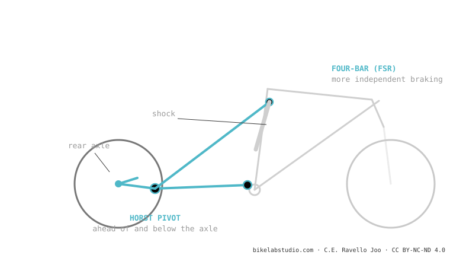

The Horst Link is a four-bar whose key pivot sits on the chainstay, ahead of and below the axle. That position partly decouples braking from the suspension (the rear keeps soaking up bumps while braking) and lets you tune anti-squat, anti-rise and the axle path with more freedom than a single pivot. Horst Leitner invented it and Specialized popularised it as FSR. It is one of the most proven systems.
It's the "real four-bar": the one with an actual articulated pivot near the axle, not a flex that simulates it. That's why it brakes differently.
A single pivot has the wheel tied to a single arm. What if you add an extra joint just before the axle? You gain a degree of freedom — and with it, control over braking.

By placing that pivot (the "Horst pivot") ahead of and below the axle, the instant centre of rotation shifts and the system gains independence: you can aim for neutral anti-squat to pedal and keep the rear active under braking, without one spoiling the other as much as in a single pivot. That's why many trail/enduro bikes choose it.
Pivot on the chainstay, ahead of and below the axle. If it's on the seatstay above the axle, it's a linkage-driven single pivot, not a Horst.
The Horst pivot decouples part of the braking force: the rear keeps soaking up bumps while braking. It's location, not magic.
Tell us the model and we'll tell you its character and the setup that makes the most of it. Message us on WhatsApp
© 2026 BikeLab Studio. Content under CC BY 4.0: you may copy, translate and publish it, even for commercial purposes. Citation is mandatory. Without attribution, the license terminates automatically (CC BY 4.0, §6.a) and the use becomes copyright infringement: we request the removal of the content and its deindexing. · Design and ownership: Carlos Ravello Joo